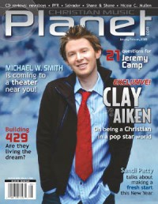

CMnexus
:
Contemporary Christian culture, music, and media.
Browse Magazines
Browse Profiles
cmnexus.org
CM
nexus
→
Profiles
→
A
→
Andy Argyrakis
Andy Argyrakis
Writing Credits: 3 of 19
< -- Previous
Next -- >
1
2
3
4
5
6
7
8
9
10
Writing credits listing
Sep 2004 in
Relevant
#10
"Keep In Touch"
Death Cab for Cutie
Sep 2004 in
CCM
27.3
"Who is Mindy Smith?"
Mindy Smith
"Keeping It Real"
Deitrick Haddon
"Chicago's WZFS-FM's "Fish Fest""
Oct 2004 in
CCM
27.4
Jump 5
-
Dreaming in Color
"World Pulse Festival"
Petra
,
Michael Tait
"Change of Plans"
Michael Tait
,
Santana
Nov 2004 in
Campus Life
63.4
"Worth The Pain?"
Jeremy Camp
Nov 2004 in
CCM
27.5
Further Seems Forever
-
Hide Nothing
"In The Name of Love Tour"
Starfield
,
Barlow Girl
,
Building 429
Nov 2004 in
Relevant
#11
Spotlight:
Medeski Martin & Wood
Dec 2004 in
CCM
27.6
Michael W. Smith
-
Healing Rain

Jan 2005 in
Christian Music Planet
4.1
"Balancing Act"
Clay Aiken
Jan 2005 in
CCM
27.7
"Try Tour"
Bebo Norman
,
Bethany Dillon
,
Jason Morant
Jan 2005 in
Christian Music Planet
4.1
PFR
-
The Bookhouse Recordings
Feb 2005 in
CCM
27.8
Sonicflood
-
This Generation
"Olivet Nazarene University, Bourbonnais, IL"
Grits
Mar 2005 in
Relevant
#13
"Alive and Kickin'"
The Arcade Fire
Mar 2005 in
CCM
27.9
Ruben Studdard
-
I Need An Angel
"All Things New Tour"
Steven Curtis Chapman
,
Chris Tomlin
,
Casting Crowns
Apr 2005 in
CCM
27.10
""I Choose You" Tour"
Point of Grace
,
Scott Krippayne
,
Charity Von
"! Tour"
May 2005 in
Relevant
#14
"Standing Strong After The Storm"
Norma Jean
Spotlight:
Scratch Track
May 2005 in
CCM
27.11
"The Truth About Charlie"
Charlie Daniels
Joy Williams
-
Genesis
Standing Room Only:
South By Southwest
"The Marvelous Mavis"
Mavis Staples
Jun 2005 in
CCM
27.12
"Is Burlap Back?"
Burlap to Cashmere
"Gospel Music Association Week"
Gospel Music Week
Jul 2005 in
CCM
28.1
"Behind The Scenes of The Second Chance"
Steve Taylor
,
Michael W. Smith
Chris Rice
-
Amusing
Aug 2005 in
CCM
28.2
"The Sweetest Thing"
Stryper
"Healing Rain Tour"
Michael W. Smith
,
Selah
,
Watermark
Haste the Day
-
When Everything Falls
The Rocket Summer
-
Hello, Good Friend
Sep 2005 in
CCM
28.3
"Shinefest"
The Newsboys
,
Superchick
,
Audio Adrenaline
"Morse Code"
Neal Morse
Oct 2005 in
CCM
28.4
"Charting A Path of Worship"
Darrell Evans
"An Evening With Jeremy Camp"
Jeremy Camp
Ginny Owens
-
Long Way Home
Nov 2005 in
Relevant
#17
Spotlight:
The Redwalls
Nov 2005 in
CCM
28.5
Standing Room Only:
John Reuben
,
4th Avenue Jones
T-Bone
-
Bone-A-Fide
Dec 2005 in
CCM
28.6
"The Zschech List"
Darlene Zschech
"Farewell Tour"
Petra
Jan 2006 in
CCM
28.7
Standing Room Only:
MxPx
,
Relient K
Derek Webb
-
Mockingbird
Feb 2006 in
CCM
28.8
"Encore Tour Preview"
4Him
Mar 2006 in
CCM
28.9
"Where Do We Go From Here Tour"
Pillar
Writing Credits: 3 of 19
< -- Previous
Next -- >
1
2
3
4
5
6
7
8
9
10
CMnexus
(noun)
The magazine index
of modern music
and Christianity
© 2011 CMnexus. Last updated September 2019.
Contact:
Rants and other correspondence to:
editor -AT- cmnexus
-DØT- org
About